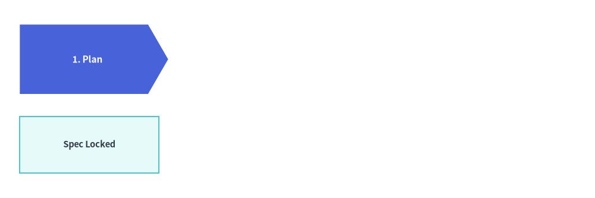
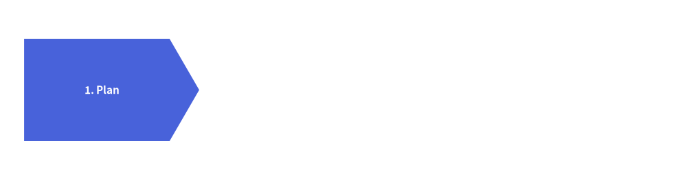
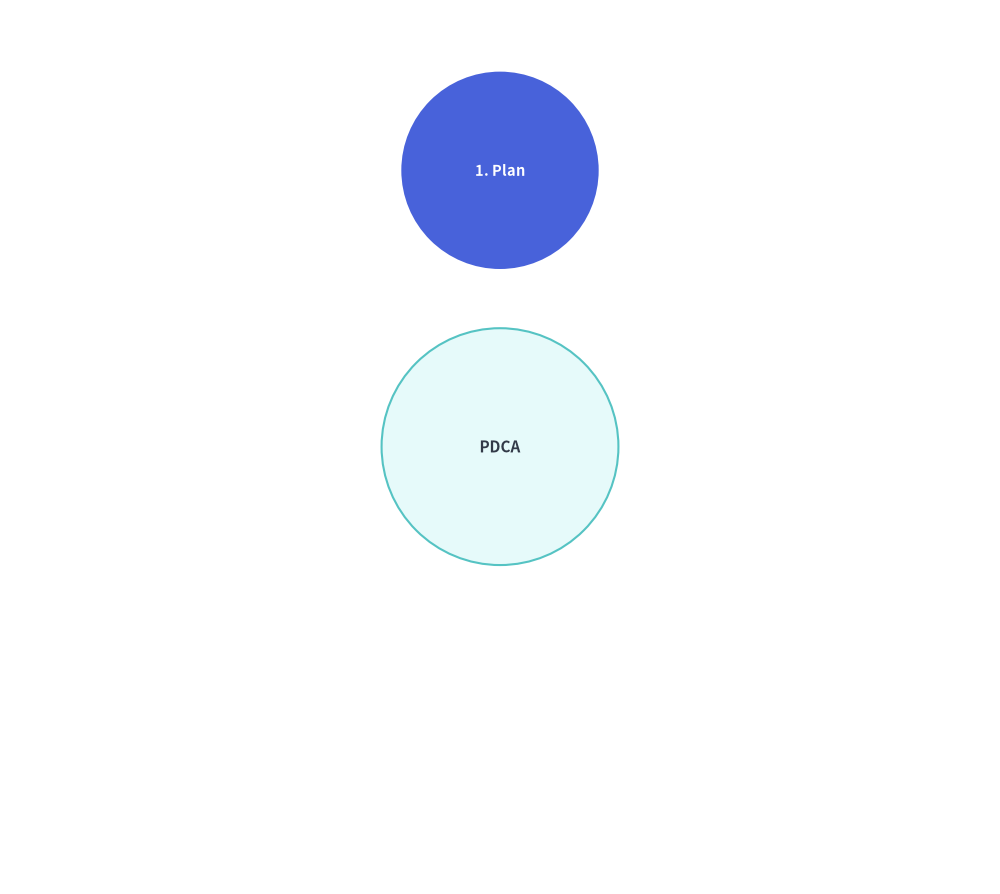
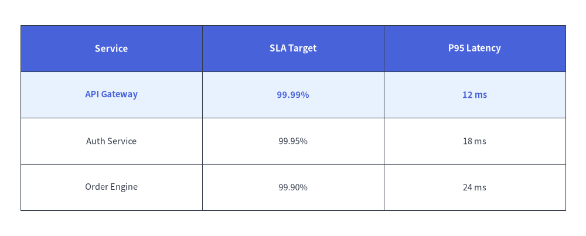

SmartArts のアニメーション
アイテムベースのすべての SmartArt コンポーネント（ChevronProcess、Cycle、GridLayout、Pyramid、BoxList、BulletPoints、TreeNode、MindMapNode）は、統一された**事前構築・フレーム内変更（Pre-Build & Mutate）**ライフサイクルに従います。

Source Code
from drawlib.anim import Animation
from drawlib.canvas import save, setup
from drawlib.smartarts import BoxList, ChevronProcess
from drawlib.styles import Styles
setup(width=120, height=40)
anim = Animation(fps=2.0)
proc = ChevronProcess(
style=Styles.Neutral,
text_style=Styles.DarkBold.patch(text_size=11.0),
description_style=Styles.Dark,
flat_left_end=True,
)
chev_items = [
proc.add("1. Plan"),
proc.add("2. Build"),
proc.add("3. Verify"),
proc.add("4. Deploy"),
]
cards = BoxList(
style=Styles.Neutral,
text_style=Styles.Dark.patch(text_size=10.5),
)
box_items = [
cards.add("Spec Locked"),
cards.add("Artifact Built"),
cards.add("Checks Green"),
cards.add("Prod Live"),
]
for step in range(len(chev_items)):
for i, (c_item, b_item) in enumerate(zip(chev_items, box_items)):
is_visible = (i <= step)
is_active = (i == step)
c_item.show = is_visible
b_item.show = is_visible
c_item.style = Styles.PrimaryFlat if is_active else Styles.PrimaryNeutral
c_item.text_style = Styles.WhiteBold.patch(text_size=11.0) if is_active else Styles.DarkBold.patch(text_size=11.0)
b_item.style = Styles.SecondaryNeutral if is_active else Styles.Neutral
b_item.text_style = Styles.DarkBold.patch(text_size=10.5) if is_active else Styles.Dark.patch(text_size=10.5)
is_last = (step == len(chev_items) - 1)
with anim.frame(duration=2.5 if is_last else 0.7):
proc.draw(xy=(4.0, 21.0), width=112.0, height=14.0)
cards.draw(xy=(4.0, 5.0), box_width=28.0, box_height=11.5, align="bottom_left")
save()
- ループの外側でコンポーネントをインスタンス化し、
item = comp.add(..., show=...)によってすべてのアイテムを一度だけ登録します。 with anim.frame():の内部でitem.show、item.style、item.text_styleなどを変更し、comp.draw(xy=..., scale=1.0)を呼び出します。
1. ミュータブルなアイテムクラス・item.show = False・比例スケーリング (scale=1.0)
アイテムベースのすべての SmartArt は .add(..., show=True) からミュータブル（変更可能）なアイテムモデルを返します（また cycle.center は CycleCenter を公開します）。これにより、draw(..., scale=1.0) や draw_flexible(..., scale=1.0) を呼び出す前に、フレームごとに表示状態・スタイル・テキストを変更できます。
| SmartArt コンポーネント | 返されるアイテムクラス | 変更可能な属性 | 描画メソッドと scale サポート |
|---|---|---|---|
ChevronProcess |
ChevronItem |
.show, .style, .text_style, .description_style, .text, .description |
draw(xy, width, height, scale=1.0) |
Cycle |
CycleItem, CycleCenter (cycle.center) |
.show, .style, .text_style, .description_style, .arrow_style, .text, .description |
draw(xy, radius, align="center", scale=1.0) |
GridLayout |
GridItem |
.show, .style, .text_style, .text, .position, .width, .height |
draw(xy, width, height, margin, scale=1.0), draw_flexible(..., scale=1.0) |
Pyramid |
PyramidItem |
.show, .style, .text_style, .text |
draw(xy, width, height, margin, scale=1.0), draw_flexible(..., scale=1.0) |
BoxList |
BoxListItem |
.show, .style, .text_style, .text |
draw(xy, box_width, box_height, margin, direction, scale=1.0) |
BulletPoints |
BulletPointItem |
.show, .style（.text_style のエイリアス）, .text_style, .text, .indent |
draw(xy, scale=1.0) |
TreeNode |
TreeNode |
.show, .text_style, .line_style, .text |
draw(xy, scale=1.0) |
MindMapNode |
MindMapNode |
.show, .style, .text_style, .line_style, .text |
draw(xy, branch=..., scale=1.0) |
Table |
（ステートフルな Table） |
reset_styles(), set_style_cell(..., rows=..., columns=...) |
draw(xy, width, height, data, scale=1.0), draw_flexible(..., scale=1.0) |
どの SmartArt アイテムでも、item.show = False を設定すると次のように動作します。
- 非表示のアイテムも自身の空間スロット（シェブロンの幅、円周上の角度、グリッドセル、ピラミッドの階層、ツリーの行）を正確に確保し続けます。
item.show = (i <= step)によってアイテムを 1 つずつ段階的に表示しても、すでに表示されているアイテムの位置がずれたりサイズが変わったりすることはありません。draw(..., scale=s)やdraw_flexible(..., scale=s)にscale != 1.0を渡すと、アンカー座標xyを基準としてすべての図形・余白・線幅・フォントサイズが均一にスケーリングされます。
2. リニアパイプラインとサイクル (ChevronProcess, Cycle)
ループの外側で ChevronProcess または Cycle を一度だけ構築し、返された ChevronItem や CycleItem オブジェクトのリスト（放射状サイクルの場合は cycle.center（CycleCenter）も含む）を保持して、フレームごとに .show、.style、.text_style を変更します。Cycle では、非表示のステップ（item.show = False）も円周上の配置角度を維持し、そのステップから出る接続矢印も自動的に非表示になります。
from drawlib.anim import Animation
from drawlib.canvas import save, setup
from drawlib.smartarts import ChevronProcess
from drawlib.styles import Styles
setup(width=114, height=30)
anim = Animation(fps=1.5)
proc = ChevronProcess(
style=Styles.Neutral,
text_style=Styles.DarkBold.patch(text_size=11.0),
description_style=Styles.Dark,
flat_left_end=True,
)
items = [
proc.add("1. Plan"),
proc.add("2. Build"),
proc.add("3. Verify"),
proc.add("4. Deploy"),
]
for step in range(len(items)):
for i, item in enumerate(items):
item.show = (i <= step)
item.style = Styles.PrimaryFlat if i == step else Styles.PrimaryNeutral
item.text_style = Styles.WhiteBold.patch(text_size=11.0) if i == step else Styles.DarkBold.patch(text_size=11.0)
is_last = (step == len(items) - 1)
with anim.frame(duration=2.5 if is_last else 0.8):
proc.draw(xy=(4.0, 6.5), width=106, height=17)
save()

同様に、Cycle でも次のように記述できます。
from drawlib.anim import Animation
from drawlib.canvas import save, setup
from drawlib.smartarts import Cycle
from drawlib.styles import Styles
setup(width=76, height=68)
anim = Animation(fps=1.5)
cycle = Cycle(
style=Styles.Neutral,
text_style=Styles.DarkBold.patch(text_size=10.5),
arrow_style=Styles.DarkBold,
node_shape="circle",
node_radius=7.5,
)
cycle.set_center(
text="PDCA",
radius=9.0,
style=Styles.SecondaryNeutral,
text_style=Styles.DarkBold.patch(text_size=11.0),
)
steps = [
cycle.add("1. Plan"),
cycle.add("2. Do"),
cycle.add("3. Check"),
cycle.add("4. Act"),
]
for step_idx in range(len(steps)):
for i, item in enumerate(steps):
item.show = (i <= step_idx)
item.style = Styles.PrimaryFlat if i == step_idx else Styles.PrimaryNeutral
item.text_style = (
Styles.WhiteBold.patch(text_size=10.5) if i == step_idx else Styles.DarkBold.patch(text_size=10.5)
)
is_last = (step_idx == len(steps) - 1)
with anim.frame(duration=2.5 if is_last else 0.8):
cycle.draw(xy=(38.0, 34.0), radius=21.0)
save()

3. マトリクスグリッドとテーブル (GridLayout, Table)
GridLayout では、grid.add((col, row), width, height, ...) がミュータブルな GridItem（cell.show、cell.style、cell.text_style）を返します。Table では、table.draw(xy, width, height, data) を呼び出す前に table.reset_styles() と table.set_style_cell(..., rows=[active_row]) を実行することで、マトリクスの行ハイライトを上から下へ順に走査できます。
from drawlib.anim import Animation
from drawlib.canvas import save, setup
from drawlib.smartarts import Table
from drawlib.styles import Colors, Styles
setup(width=114, height=46)
anim = Animation(fps=1.5)
tbl = Table(
cell_style=Styles.White,
text_style=Styles.Dark.patch(text_size=10.5),
header_cell_style=Styles.PrimaryFlat,
header_text_style=Styles.WhiteBold.patch(text_size=11.0),
border_style=Styles.DarkThin,
)
data = [
["Service", "SLA Target", "P95 Latency"],
["API Gateway", "99.99%", "12 ms"],
["Auth Service", "99.95%", "18 ms"],
["Order Engine", "99.90%", "24 ms"],
]
for row_idx in [1, 2, 3]:
tbl.reset_styles()
tbl.set_style_cell(
background_color=Colors.Primary1,
text_style=Styles.PrimaryBold.patch(text_size=10.5),
rows=[row_idx],
)
is_last = (row_idx == 3)
with anim.frame(duration=2.5 if is_last else 0.8):
tbl.draw(xy=(4.0, 41.0), width=106, height=36, data=data)
save()

4. 階層ツリーとマインドマップ (TreeNode, MindMapNode)
TreeNode と MindMapNode では、ループの外側で一度だけ階層構造をインスタンス化し、root.draw(xy=..., scale=1.0) を呼び出す前にフレームごとに .show を変更します。
child.show = Falseを設定すると、子ノードのラベル・親ノードから伸びる枝線・配下のサブツリー全体が非表示になりますが、後続の兄弟ノードの垂直方向の Y 座標は正確に維持されます。
from drawlib.anim import Animation
from drawlib.canvas import save, setup
from drawlib.icons import phosphor
from drawlib.smartarts import TreeNode
from drawlib.styles import Styles
setup(width=96, height=52)
anim = Animation(fps=1.5)
TreeNode.register_drawing_item(
name="folder", location="before", padding_width=4.2, function=phosphor.folder,
style=Styles.PrimaryFlat, args={"width": 3.4},
)
TreeNode.register_drawing_item(
name="file", location="before", padding_width=4.2, function=phosphor.file_text,
style=Styles.Dark, args={"width": 3.4},
)
n_api = TreeNode("api.py", text_style=Styles.Dark.patch(text_size=11.0), show=False).set_drawing_item("file")
n_auth = TreeNode("auth.py", text_style=Styles.Dark.patch(text_size=11.0), show=False).set_drawing_item("file")
n_services = TreeNode("services/", text_style=Styles.DarkBold.patch(text_size=11.0), children=[n_api, n_auth], show=False).set_drawing_item("folder")
n_main = TreeNode("main.py", text_style=Styles.Dark.patch(text_size=11.0), show=False).set_drawing_item("file")
root = TreeNode(
"src/",
text_style=Styles.DarkBold.patch(text_size=11.0),
line_style=Styles.DarkThin,
line_horizontal_margin=3.0,
line_horizontal_length=3.5,
line_vertical_margin=6.0,
children=[n_services, n_main],
).set_drawing_item("folder")
steps = [
(False, False, False, False),
(True, False, False, False),
(True, True, True, False),
(True, True, True, True),
]
for idx, (s_svc, s_api, s_auth, s_main) in enumerate(steps):
n_services.show = s_svc
n_api.show = s_api
n_auth.show = s_auth
n_main.show = s_main
is_last = (idx == len(steps) - 1)
with anim.frame(duration=2.5 if is_last else 0.8):
root.draw(xy=(20, 44))
save()